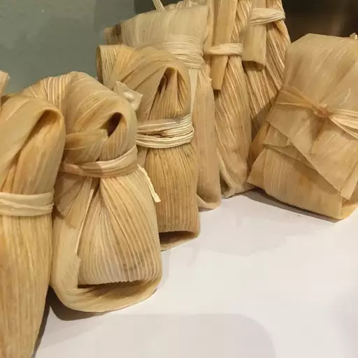

Tamales

Description
These beef tamales are just like the tamales my Abuelita used to make for special occasions. This recipe makes a lot, but if you're going to go through all the trouble of making tamales from scratch, you might as well have a party! You will need butchers' twine and a large pot with a steamer basket to make these.
Ingredients
- 4 pounds boneless chuck roast
- 4 cloves garlic
- 3 (8 ounce) packages dried corn husks
- 4 dried ancho chiles
- 2 tablespoons vegetable oil
- 2 tablespoons all-purpose flour
- 1 cup beef broth
- 2 cloves garlic, minced
- 2 teaspoons chopped fresh oregano
- 1 teaspoon cumin seeds
- 1 teaspoon ground cumin
- 1 teaspoon red pepper flakes
- 1 teaspoon white vinegar
- salt to taste
- 3 cups lard
- 1 tablespoon salt
- 9 cups masa harina
>